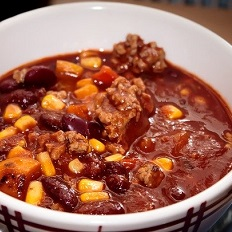
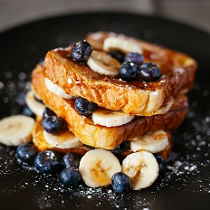
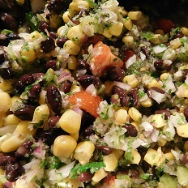

Crockpot Chili

Recipe Info
Servings: 6
Prep Time: 25 mins
Cook Time: 6 hours
Difficulty: Easy
Ingredients:
Servings:
- 2 tbsp. cooking oil
- 1 cup onion
- 1 cup chopped peppers
- 1 tbsp. Chili powder
- 1 tsp. Hot chili powder (optional)
- 1 lb ground beef or chicken
- 2 cans Red Beans
- 2 cans Kidney Beans
- 2 cans Tomato Puree
- 2 cans Tomato Sauce
- 1 cup shredded cheese (optional)
- 0.5 cup sour cream (optional)
Instructions:
- Heat cooking oil in 2 quart skillet.
- Saute onions and peppers for 5 minutes.
- Add spices and stir for 30 seconds.
- Add meat and cook until browned. Approximately 15 minutes.
- Pour contents of skillet into 3 quart crock pot.
- Rinse beans and place in crockpot.
- Open and pour Tomato puree and sauce into crock pot.
- Cover crockpot and cook on low for 6 hours.
- Serve into individual bowls and top with sour cream and cheese.
Blueberry Banana French Toast

Recipe Info
Servings: 8
Prep Time: 10 mins
Cook Time: 15 mins
Difficulty: Easy
Ingredients:
Servings:
- 2 ripe bananas
- 0.5 cup fresh blueberries
- 1 cup chopped peppers
- 1 tsp. vanilla
- 0.75 cup unsweetened vanilla almond milk
- 3 tblsp. butter
- 8 slices of bread
Optional Toppings
- Maple Syrup
- Blueberry Syrup
- Cinnamon
- More Blueberries and Banana slices
Instructions:
- Blend up the bananas, vanilla, and almond milk (add sugar if you choose to), and blend until smooth.
- Add blueberries into the blended mixture and pulse until broken up.
- Pour the mixture into a large bowl for dipping.
- Put a little bit of butter in a skillet and let it heat up on high heat, melting the butter.
- Dip your toast into the batter and place on the hot skillet. Cook 2-4 minutes on each side of the toast until brown.
- Plate and top with topping of your choice.
Mango Black Bean Salsa

Recipe Info
Servings: 6
Prep Time: 15 mins
Cook Time: 0 mins
Difficulty: Easy
Ingredients:
Servings:
- 2 medium mangoes
- 1 large tomato, chopped
- 1 large bell pepper, chopped
- 1 cup corn
- 15 oz can black beans, drained and rinsed
- 0.5 cups cilantro, chopped
- 2 tbsp. red onion, minced
- 2 tbsp. olive oil
- 1 lime, juiced
- 2 tsp. ground cumin
- 0.5 tsp salt
- red pepper flakes, to taste
Instructions:
- In a large bowl, add mango, tomato, bell pepper, corn, black beans, cilantro, onion, olive oil, lime juice, cumin, salt, hot pepper flakes.
- Gently stir to combine. If you have time, allow flavors to marry each other in the fridge for a few hours.
- Serve cold with cilantro lime chicken, grilled salmon or add cooked quinoa to make it one complete meal.